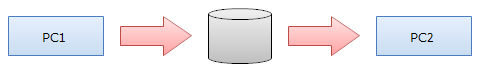

PC間でデータを移動する
複数のPC間でデータを移動するには「ノート格納フォルダのエクスポート」と「ノート格納フォルダのインポート」を使います。 ネットワークでつながっていないPC間でもポータブルHDDやUSBメモリなどを使ってデータを受け渡しすることができます。
エクスポートの動作
「ノート格納フォルダのエクスポート」はノートのデータを指定したフォルダにエクスポートします。 メインメニューの「ファイル」>「ノート格納フォルダ」>「エクスポート」から実行できます。 エクスポート処理が終わるとエクスポート先のフォルダはそのまま「ノート格納フォルダ」として使用できる状態になります。
エクスポート先に指定できるのは以下のフォルダです。
- 空のフォルダ
空のフォルダにエクスポートする場合，すべてのノートのデータが指定したフォルダにコピーされます。 - 以前にエクスポートしたフォルダ
以前にエクスポートしたフォルダにエクスポートする場合，現在のノートのデータとの差分がコピーされます。 すべてのデータをコピーするよりも早く処理が終わります。 - 他のPC上の「ノート格納フォルダ」
ネットワークドライブなどを通してアクセス可能な状態の「ノート格納フォルダ」に直接エクスポートすることができます。 ただし，エクスポート先の「ノート格納フォルダ」が使用中の場合はエクスポートできないので， エクスポート前にエクスポート先のPC上のMochaNoteを終了しておく必要があります。
上記以外のフォルダにエクスポートしようとするとエラーが表示されてエクスポートできません。
インポートの動作
「ノート格納フォルダのインポート」はノートのデータを指定したフォルダからインポートします。 メインメニューの「ファイル」>「ノート格納フォルダ」>「インポート」から実行できます。
インポート元に指定できるのは以下のフォルダです。
- 「ノート格納フォルダのエクスポート」でエクスポートしたフォルダ
現在のノートのデータとの差分がコピーされます。 - 他のPC上の「ノート格納フォルダ」
ネットワークドライブなどを通してアクセス可能な状態の「ノート格納フォルダ」から直接インポートすることができます。 ただし，インポート元の「ノート格納フォルダ」が使用中の場合はインポートできないので， インポート前にインポート元のPC上のMochaNoteを終了しておく必要があります。
上記以外のフォルダからインポートしようとするとエラーが表示されてインポートできません。
使い方
主な使い方を説明します。
ネットワーク経由で直接エクスポート
PC1のノートのデータをネットワーク経由でPC2にエクスポートする方法を説明します。
- PC2上の「ノート格納フォルダ」またはその祖先フォルダを共有フォルダに設定します
- 1.で設定した共有フォルダをPC1でネットワークドライブに割り当てます
- PC2上のMochaNoteが起動している場合は終了します
- PC1上のMochaNoteでメインメニューの「ファイル」>「ノート格納フォルダ」>「エクスポート」を選択します
- エクスポート先のフォルダに2.で割り当てたネットワークドライブ経由でPC2上の「ノート格納フォルダ」を指定します
- PC1とPC2のノートのデータの差分がPC2にコピーされます
- PC2上でMochaNoteを起動します
ネットワーク経由で直接インポート
PC1のノートのデータにネットワーク経由でPC2からインポートする方法を説明します。
- PC2上の「ノート格納フォルダ」またはその祖先フォルダを共有フォルダに設定します
- 1.で設定した共有フォルダをPC1でネットワークドライブに割り当てます
- PC2上のMochaNoteが起動している場合は終了します
- PC1上のMochaNoteでメインメニューの「ファイル」>「ノート格納フォルダ」>「インポート」を選択します
- インポート元のフォルダに2.で割り当てたネットワークドライブ経由でPC2上の「ノート格納フォルダ」を指定します
- PC1とPC2のノートのデータの差分がPC1にコピーされます
- MochaNoteが自動的に再起動します
ポータブルHDDやUSBメモリを経由
PC1のノートのデータをエクスポートして，ポータブルHDDやUSBメモリ経由でPC2にインポートする方法を説明します。

- PC1にポータブルHDDやUSBメモリを取りつけます
- PC1上のMochaNoteでメインメニューの「ファイル」>「ノート格納フォルダ」>「エクスポート」を選択します
- エクスポート先のフォルダにポータブルHDDやUSBメモリ上のフォルダを指定します
- PC1のノートのデータがコピーされています。以前にエクスポートしたフォルダを指定した場合，差分がコピーされるため早く処理が終わります
- PC1からポータブルHDDやUSBメモリを取り外します
- PC2にポータブルHDDやUSBメモリを取りつけます
- PC2上のMochaNoteでメインメニューの「ファイル」>「ノート格納フォルダ」>「インポート」を選択します
- インポート元のフォルダに3.でエクスポート先に指定したフォルダを指定します
- PC2にノートのデータがコピーされます
- MochaNoteが自動的に再起動します